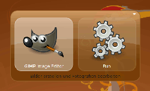
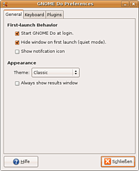
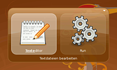
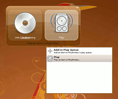
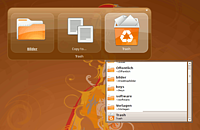
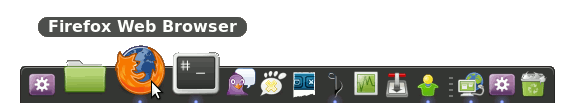
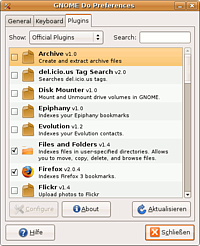
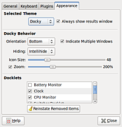
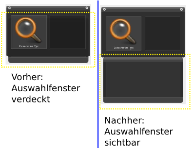

GNOME Do
Dieser Artikel wurde für die folgenden Ubuntu-Versionen getestet:
Dieser Artikel ist mit keiner aktuell unterstützten Ubuntu-Version getestet! Bitte diesen Artikel testen und das getestet-Tag entsprechend anpassen.
Zum Verständnis dieses Artikels sind folgende Seiten hilfreich:
 GNOME Do
GNOME Do  ist ein vielseitiger Anwendungsstarter, dessen Möglichkeiten weit über das simple Starten von Programmen hinaus gehen. Mit GNOME Do kann man Musik zu den Playlisten von Amarok, Rhythmbox oder Banshee hinzufügen, Dateioperationen ausführen, in Kontakten von Evolution oder Pidgin suchen und Mails bzw. Chats mit den gefundenen Treffern initiieren und vieles mehr.
ist ein vielseitiger Anwendungsstarter, dessen Möglichkeiten weit über das simple Starten von Programmen hinaus gehen. Mit GNOME Do kann man Musik zu den Playlisten von Amarok, Rhythmbox oder Banshee hinzufügen, Dateioperationen ausführen, in Kontakten von Evolution oder Pidgin suchen und Mails bzw. Chats mit den gefundenen Treffern initiieren und vieles mehr.
Obwohl das Programm für GNOME geschrieben wurde, arbeitet es auch problemlos mit anderen Desktopumgebungen bzw. Fenstermanagern zusammen.
Installation¶

GNOME Do kann man direkt aus der Paketverwaltung heraus installieren [1].
gnome-do (universe)
gnome-do-plugins (universe, nützlich, da es viele Plugins, z.B. auch für Rhythmbox enthält)
 mit apturl
mit apturl
Paketliste zum Kopieren:
sudo apt-get install gnome-do gnome-do-plugins
sudo aptitude install gnome-do gnome-do-plugins
Benutzung¶
Nach der Installation der Pakete von GNOME Do kann man das Programm mit gnome-do starten [2]. Öffnet man das Programm, so erscheint sofort das Fenster von GNOME Do. Wird ein Fenstermanager genutzt, der Composite-Effekte bieten kann, so ist das Fenster von GNOME Do teilweise transparent.
Das Fenster gliedert sich in bis zu drei Teile. Links wird gesucht, und rechts eine Aktion für das Suchergebnis ausgewählt. Wird eine Aktion gewählt, die weitere Interaktion bedarf, so erscheint ein drittes Feld, in dem man ein Ziel auswählen kann. So funktioniert GNOME Do immer nach dem Prinzip "Suche, Aktion und eventuell ein Ziel". Zwischen den einzelnen Teilen kann man mit der Tab ⇆ Taste umschalten.
Führt man eine Aktion aus bzw. schließt man das Fenster von GNOME Do mit Esc , so wird GNOME Do weiterhin im Hintergrund ausgeführt. Mit der Tastenkombination Windows + kann man das Programm wieder in den Vordergrund holen.
Einstellungen¶

GNOME Do lässt sich recht umfangreich anpassen. Dies geschieht in den Einstellungen des Programms. Um diese zu öffnen, blendet man das Fenster von GNOME Do mit Windows + ein und klickt auf den Pfeil in der rechten oberen Ecke des Fensters. Darauf öffnet sich ein Popup-Menü. Über "Preferences" gelangt man dann in die Einstellungen von GNOME Do. Hier lässt sich einstellen, dass GNOME Do automatisch startet, ob ein Symbol im Benachrichtigungsfeld angezeigt werden soll, die Tastenkombination für GNOME Do ändern, sowie Plugins (de-)aktivieren.
Sitzung¶
Damit GNOME Do automatisch beim Anmelden geladen wird, sollte man das Programm in die Sitzung der genutzten Desktop-Umgebung einfügen [3]. In den Einstellungen findet man dazu die Optionen "Start GNOME Do at login" und "Hide window on first launch (quiet mode)". So startet GNOME Do automatisch, ohne dass das Fenster des Programms eingeblendet wird.
Beispiele¶
GNOME Do ist sehr intuitiv zu bedienen, doch manche Funktionen entdeckt man erst, wenn man sich ein bisschen in GNOME Do eingearbeitet hat. Anhand einer Reihe von Beispielen soll die Arbeitsweise von GNOME Do erläutert werden.
Beispiel 1 - Programm starten¶

Die gebräuchlichste Aktion für GNOME Do ist es, Programme zu starten. Dazu holt man GNOME Do in den Vordergrund und gibt den Namen des Programms ein. Dabei wird die Eingabe automatisch vervollständigt. Ist das passende Programm gefunden, so kann man es über ⏎ starten. Hier ist zu beachten, dass GNOME Do die Namen aus dem Anwendungsmenü benutzt. So startet nicht "gedit" den Editor der GNOME Desktopumgebung, sondern "Texteditor", so wie es eben im "Menü -> Anwendungen" auch steht.
Beispiel 2 - Musik suchen und abspielen¶

Sind die passenden Plugins installiert (s.o.), so kann GNOME Do Musik aus den in den Musikdatenbanken Rhythmbox, Amarok oder Banshee suchen und abspielen. Dazu gibt man einfach den Namen eines Interpreten oder eines Albums ein. Im Aktionsfeld kann man dann bestimmen, ob die Titel die Playliste ersetzen sollen ("Play") oder ob sie an die aktuelle Playliste angehängt werden sollen ("Add to Play Queue").
Beispiel 3 - Dateioperationen¶

Selbst Dateioperationen lassen sich mit GNOME Do ausführen. Gibt man als Suchbegriff einen Namen einer Datei oder eines Ordners ein, die/der im eigenen Homeverzeichnis liegt, so kann man im Aktionen-Feld "Copy to..." bzw. "Move to..." auswählen. Danach öffnet sich ein drittes Feld, in dem man ein Ziel auswählen kann.
Docky¶
Hinweis:
Die Projekte Docky und GNOME Do werden mittlerweile getrennt voneinander entwickelt. Wer sich nur für Docky interessiert, sollte diesen Artikel lesen.
Seit GNOME Do 0.8 kann GNOME Do auch als Dock, also als Leiste am unteren Rand des Bildschirms, fungieren. Dazu muss in den Einstellungen zu GNOME Do (
Windows +
-  -Klick auf Pfeil) unter "Einstellungen -> Erscheinungsbild" das Thema "Docky" aktiviert werden.
-Klick auf Pfeil) unter "Einstellungen -> Erscheinungsbild" das Thema "Docky" aktiviert werden.

Umgang mit dem Docky¶
Icons, die dort nicht erscheinen sollen, können einfach mit der Maus herausgezogen werden. Fehlende Icons können mit Klick auf das kleine Pluszeichen hinzugefügt werden, wenn der Befehl eingegeben aber noch nicht ausgeführt wurde. Praktisch dabei ist, dass man auch ganze "Befehlsketten" in die Leiste legen kann.
Plugins installieren¶

GNOME Do kann durch eine Reihe von Plugins erweitert werden. Über Plugins lassen sich zahlreiche Funktionen nachrüsten. So kann GNOME Do Bookmarks von Firefox oder Epiphany durchsuchen, in den Kontakten von Evolution oder Pidgin stöbern und Chats bzw. Emails zu diesem Kontakten einleiten und vieles mehr. Über die Einstellungen kann man selber bestimmen, welche Plugins GNOME Do nutzen soll. Einzelne Plugins lassen sich dort (de-)aktivieren und auch konfigurieren.
Docklets aktiveren¶

Seit Gnome Do 0.82 kennt das Programm eine spezielle Form von Plugins: Docklets. Wie die bereits bekannte Uhr oder der Mülleimer erscheinen die Docklets rechts in einem separaten Bereich. Zur Verfügung stehen neben der erwähnten Uhr und dem Mülleimer Docklets zur Überwachung der CPU-Auslastung (gleichzeitig eine Abkürzung zum Systemmonitor), des Batteriestatus, ein Workspace-Switcher, ein Wetterbeobachter und eine Lautstärkenregelung. Docklets müssen erst über das Paket gnome-do-docklets installiert werden.
Docklets werden als eigene Kategorie "Plugins" geführt. Nach der Aktivierung wie oben beschrieben müssen die Docklets jedoch erst zu Docky hinzugefügt werden, indem sie unter "Einstellungen -> Erscheinungsbild" ausgewählt werden.
Unter KDE Plasma¶
Wie man dem Namen entnehmen kann, ist GNOME Do eigentlich für Gnome entwickelt worden; trotzdem funktioniert es auch mit KDE Plasma und hat mit "Glass Frame" auch ein Design, das dem KDE-Standardstyle nachempfunden ist.
Es kann jedoch vorkommen, dass GNOME Do nicht mehr wie vorgesehen über den anderen Fenstern erscheint, sondern von diesen verdeckt wird. Hier eine Lösungsmöglichkeit von der Entwicklerseite :
Hierzu erstellt man eine Fensterregel mit folgenden Eigenschaften:
Im Reiter "Fenster"
"Fensterklasse (Programmtyp):" do
"Exakte Übereinstimmung" in der Auswahlliste
Im Reiter "Fenster-Besonderheit"
"Fenster-Typen:" Begrüßungsbildschirm
"Fenstertitel" "Exakte Übereinstimmung" in der Auswahlliste und
"Do" eintragen
Im Reiter "Provisorien"
"Vorbeugung gegen Übernahme der Aktivierung:" "Erzwingen" und "Keine"
"Fenstertyp:" "Erzwingen" und "Begrüßungsbildschirm"

Sollten die genannte Fensterregeln nicht funktionieren, kann die folgende ggf. zum Erfolg führen (getestet mit Kubuntu 12.04). Damit wird die Auswahlliste unterhalb des Eingabefensters dargestellt.
Im Reiter "Fensterübereinstimmung"
"Fensterklasse (Programm):" do
"Exakte Übereinstimmung" in der Auswahlliste
"Fenster-Typen:" Begrüßungsbildschirm
"Fenstertitel" "Exakte Übereinstimmung" in der Auswahlliste und
"Do" eintragen
Im Reiter "Erscheinungsbild & Korrekturen"
"Fenstertyp:" "Erzwingen" und "Normales Fenster"
Links¶
Install and configure GNOME Do in Ubuntu Unity
- Artikel zu Installation und Konfiguration, 05/2011Docks und andere Anwendungsstarter
 Programmübersicht
Programmübersicht
- Erstellt mit Inyoka
-
 2004 – 2017 ubuntuusers.de • Einige Rechte vorbehalten
2004 – 2017 ubuntuusers.de • Einige Rechte vorbehalten
Lizenz • Kontakt • Datenschutz • Impressum • Serverstatus -
Serverhousing gespendet von